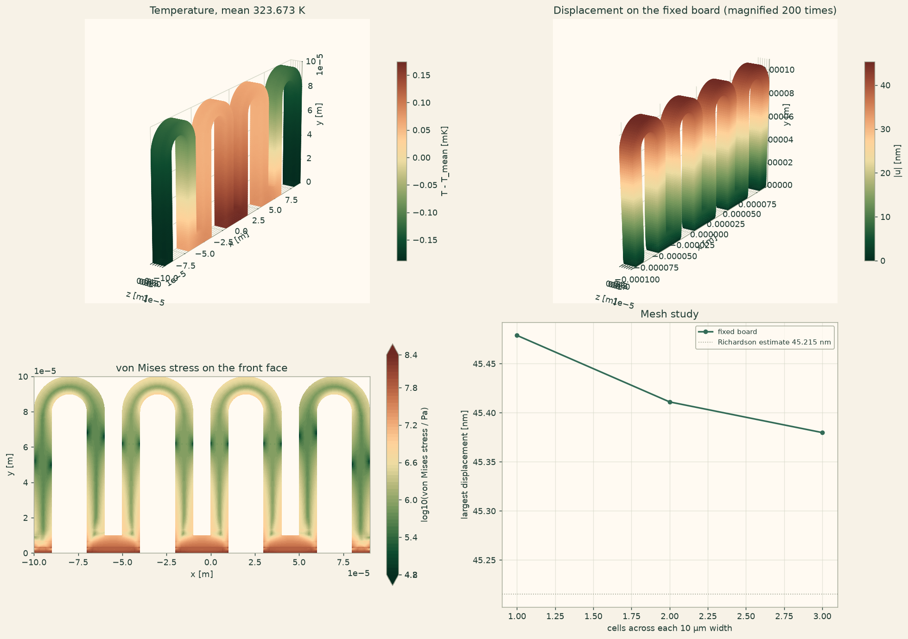

Docs › Examples › Thermal expansion in a MEMS device
Thermoelasticity · 3D
Thermal expansion in a MEMS device
A Joule-heated copper-beryllium microstructure on a circuit board: how much it warms, how far it moves, and how much the board's own expansion relieves the stress.

What it computes
OneSimulation solves the nonlinear heat equation with temperature-dependent conductivity and then 3D thermoelasticity on quadratic tetrahedra, coupling the temperature field into the thermal strain, for a fixed, an expanding and a matched board.
What it checks
The device temperature matches the published value to 0.001 K, the heat balance closes to 1e-7, the matched board reproduces exact free expansion to 1e-5, and the board expansion lowers the peak stress by about an order of magnitude.
The notebook
The complete notebook, cell by cell. Run it to produce the figures and the comparison printout.
MEMS devices must keep their shape while the drive current heats them. The device is a meander of four hairpins etched from a 10 µm layer of the copper-beryllium alloy C17500: legs 10 µm wide and 80 µm tall, half-ring arches, and short bars that join the hairpins at the bottom. The bottom face is bonded to a circuit board.
| face | thermal condition | mechanical condition | |---|---|---| | bonded bottom face | insulated | follows the board | | all other faces | convection, \(h=10\) W/(m² K), air at 298 K | traction-free |
The Joule heating is the uniform source \(Q=10^8\) W/m³; the thermal strain is \(\alpha\,(T-T_\mathrm{ref})\) with the strain-free temperature \(T_\mathrm{ref}=298\) K.
References. (1) The published device temperature of 323.67 K. Because the Biot number is of order \(10^{-7}\), the device is nearly isothermal at the lumped-body value \(T_\infty+QV/(hA)\). (2) On a board that expands like the alloy itself the device expands freely: the displacement is exactly \(\alpha\,\Delta T\,\mathbf x\) and the stress is zero.
import numpy as np
from onesim.materials import IsotropicSolid, PolynomialLaw
from onesim.meshing import Block, arc, extrude, line, merge_blocks, rectangle_block
from onesim.numerics import Numerics
from onesim.numerics.fem import FiniteElement, Lagrange
from onesim.numerics.field_transfer import FiniteElementEvaluation
from onesim.numerics.linear import SparseDirect
from onesim.physics.heat_transfer import ConvectiveHeatFlux, HeatConduction, HeatFlux
from onesim.physics.solid_mechanics import FixedDisplacement, IsotropicThermalExpansion, LinearElasticity, TractionFree
from onesim.results.comparisons import convergence
from onesim.results.integration import measure
from onesim.simulation import Problem, Simulation
from onesim.simulation.field_connections import FieldCoupling
from onesim.visualization import theme, plots
theme.set()Parameters
The alloy data at 20 °C are \(k=208\) W/(m K), \(E=138\) GPa and \(\alpha=16.8\times10^{-6}\) 1/K, with linear temperature laws about 293.15 K. They are evaluated at the published operating temperature.
um = 1e-6
leg_width, leg_height, arch_inner, arch_outer, depth, pitch = 10 * um, 80 * um, 10 * um, 20 * um, 10 * um, 50 * um
hairpins, x_first = 4, -100 * um
Q, h_conv, T_air, T_ref, T_published = 1e8, 10.0, 298.0, 298.0, 323.67
at_operation = lambda value, slope, unit: float(PolynomialLaw((value, value * slope), unit=unit, reference=293.15)
.evaluate(temperature=T_published))
alpha = at_operation(16.8e-6, 2.5e-4, "1/K")
alloy = IsotropicSolid(density=8830.0, specific_heat_capacity=420.0, poisson_ratio=0.30,
thermal_conductivity=at_operation(208.0, 2.0e-4, "W/m/K"),
youngs_modulus=at_operation(138e9, -3.5e-4, "Pa"), thermal_expansion_coefficient=alpha)Geometry and mesh
The profile is assembled from rectangular blocks (legs, feet, joining bars) and half-ring blocks (arches) with quadratic edges, then extruded through the layer thickness into 27-node hexahedra.
def meander_mesh(n):
"""Hexahedral mesh of the meander with n cells across each 10 um width."""
foot = dict(names=("base", None, None, None))
blocks = []
for i in range(hairpins):
left = x_first + i * pitch
centre = left + 2 * leg_width
for x0 in (left, left + 3 * leg_width):
blocks += [rectangle_block((x0, 0.0), leg_width, leg_width, (n, n), **foot),
rectangle_block((x0, leg_width), leg_width, leg_height - leg_width, (n, 7 * n))]
blocks.append(Block(arc((centre, leg_height), arch_inner, np.pi, 0.0),
line((centre + arch_inner, leg_height), (centre + arch_outer, leg_height)),
arc((centre, leg_height), arch_outer, np.pi, 0.0),
line((centre - arch_inner, leg_height), (centre - arch_outer, leg_height)), cells=(6 * n, n)))
if i < hairpins - 1:
blocks.append(rectangle_block((left + 4 * leg_width, 0.0), leg_width, leg_width, (n, n), **foot))
return extrude(merge_blocks(blocks, order=2, unnamed="side_walls"), depth, n, names=("back", "front"))Model and solution
Heat conduction first, then linear elasticity with the temperature coupled in as thermal load. The bonded face is either fixed or follows a board with the alloy's own expansion.
def solve(n, board="fixed"):
"""Temperature, displacement and von Mises stress on the mesh with n cells per width."""
mesh = meander_mesh(n)
b = mesh.geometry.boundaries
free = b.front | b.back | b.side_walls
numerics = Numerics(spatial=FiniteElement(element=Lagrange(order=2)), linear_solver=SparseDirect())
heat = HeatConduction(domain=mesh.geometry.domain(), material=alloy, heating=Q)
temperature = Simulation(mesh=mesh, numerics=numerics, problem=Problem(
name="Joule-heated meander", geometry=mesh.geometry, physics=(heat,), boundary_conditions=(
ConvectiveHeatFlux(boundary=free, physics=heat, heat_transfer_coefficient=h_conv, ambient_temperature=T_air),
HeatFlux(boundary=b.base, physics=heat, value=0.0)))).solve_stationary().field(heat.temperature)
rise = float(np.mean(temperature.evaluate(mesh.coordinates))) - T_ref
support = (0.0, 0.0, 0.0) if board == "fixed" else lambda x, y, z: alpha * rise * np.stack((x, 0.0 * y, z), axis=-1)
solid = LinearElasticity(domain=mesh.geometry.domain(), material=alloy,
thermal_strain=IsotropicThermalExpansion(reference_temperature=T_ref))
result = Simulation(mesh=mesh, numerics=numerics, problem=Problem(
name="Meander on its board", geometry=mesh.geometry, physics=(solid,), boundary_conditions=(
FixedDisplacement(boundary=b.base, physics=solid, value=support), TractionFree(boundary=free, physics=solid)),
couplings=(FieldCoupling(source=temperature, target=solid.temperature, transfer=FiniteElementEvaluation()),))
).solve_stationary()
return dict(mesh=mesh, free=free, rise=rise, temperature=temperature, displacement=result.field(solid.displacement),
stress=result.field(solid.von_mises_stress))
levels = (1, 2, 3)
runs = [solve(n) for n in levels]
fine, matched = runs[-1], solve(2, board="matched")Results
T = fine["temperature"]
T_nodes = np.asarray(T.evaluate(fine["mesh"].coordinates)).ravel()
T_lumped = T_air + Q * measure(T) / (h_conv * measure(T, boundary=fine["free"]))
print(f"temperature between {T_nodes.min():.4f} K and {T_nodes.max():.4f} K "
f"(published {T_published} K, lumped body {T_lumped:.4f} K)")
print(f"heat balance: generated {1e6 * Q * measure(T):.5f} µW, convected {1e6 * T.boundary_flux(fine['free']):.5f} µW")
points = np.asarray(matched["mesh"].coordinates)
u_exact = alpha * matched["rise"] * points
u_matched = np.asarray(matched["displacement"].evaluate(points))
stress_scale = alloy.youngs_modulus * alpha * matched["rise"]
print(f"matched board: largest displacement error {np.abs(u_matched - u_exact).max() / np.abs(u_exact).max():.1e}, "
f"largest von Mises stress / (E alpha dT) {np.asarray(matched['stress'].evaluate(points)).max() / stress_scale:.1e}")
u_max = [float(np.linalg.norm(run["displacement"].evaluate(run["mesh"].coordinates), axis=1).max()) / um * 1e3 for run in runs]
study = convergence(u_max, [1.0 / n for n in levels])
print("fixed board, largest displacement [nm]: " + ", ".join(f"n = {n}: {u:.3f}" for n, u in zip(levels, u_max))
+ f"; Richardson estimate {study.extrapolated:.3f} (order {study.order:.2f})")Figure
The temperature (deviation from its mean in mK), the displacement on the fixed board drawn on the 200 times magnified shape, the von Mises stress on the front face, and the mesh study.
b = fine["mesh"].geometry.boundaries
camera = plots.Camera(elevation=20, azimuth=-58, up="y")
fig = plots.figure(2, 2, size=(15, 10.5))
plots.surface(T, boundary=fine["free"], component=lambda values, position: 1e3 * (values - T_nodes.mean()), camera=camera,
label="T - T_mean [mK]", title=f"Temperature, mean {T_nodes.mean():.3f} K", ax=fig[0])
plots.surface(fine["displacement"], boundary=fine["free"], component=lambda u, position: np.linalg.norm(u, axis=1) / um * 1e3,
deformation=fine["displacement"], deformation_scale=200.0, camera=camera, label="|u| [nm]",
title="Displacement on the fixed board (magnified 200 times)", ax=fig[1])
plots.surface(fine["stress"], boundary=b.front, component=lambda s, position: np.log10(np.maximum(s, 1e3)), subdivisions=3,
label="log10(von Mises stress / Pa)", title="von Mises stress on the front face", ax=fig[2])
plots.line(levels, {"fixed board": u_max}, hlines={f"Richardson estimate {study.extrapolated:.3f} nm": study.extrapolated},
markers=True, xlabel="cells across each 10 µm width", ylabel="largest displacement [nm]",
title="Mesh study", ax=fig[3])
plots.show()Going further
Bond the device to a glass-epoxy board with \(\alpha=18\times10^{-6}\) 1/K instead: the board then stretches the feet and the stress concentrates at the joining bars. Raising the heat source raises the temperature in proportion, because the device stays in the lumped-body regime.